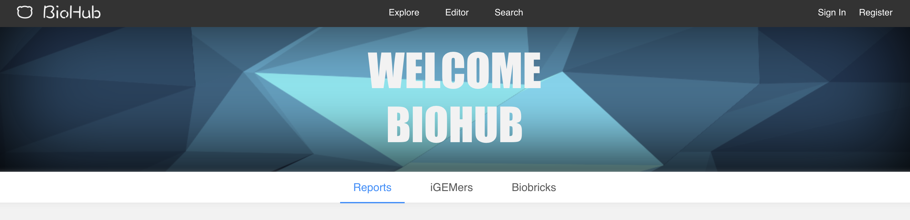
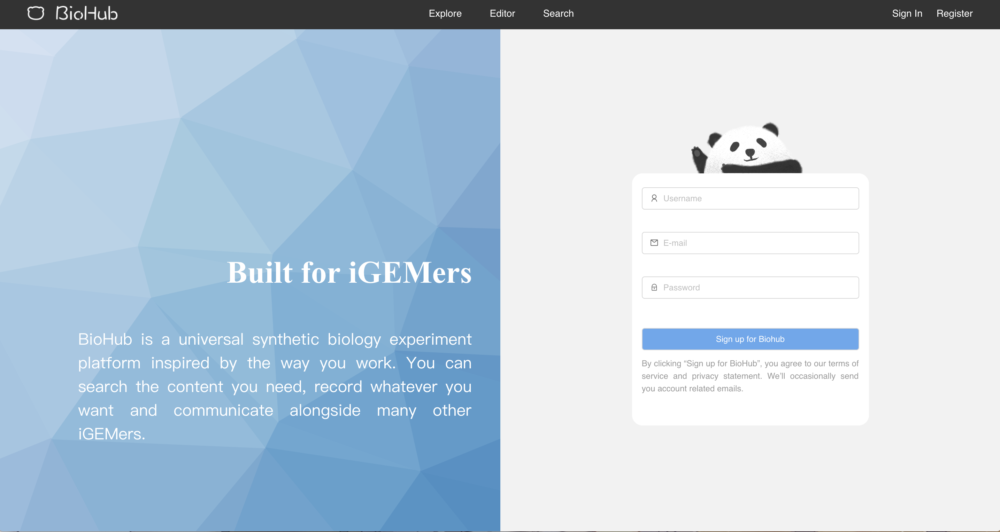
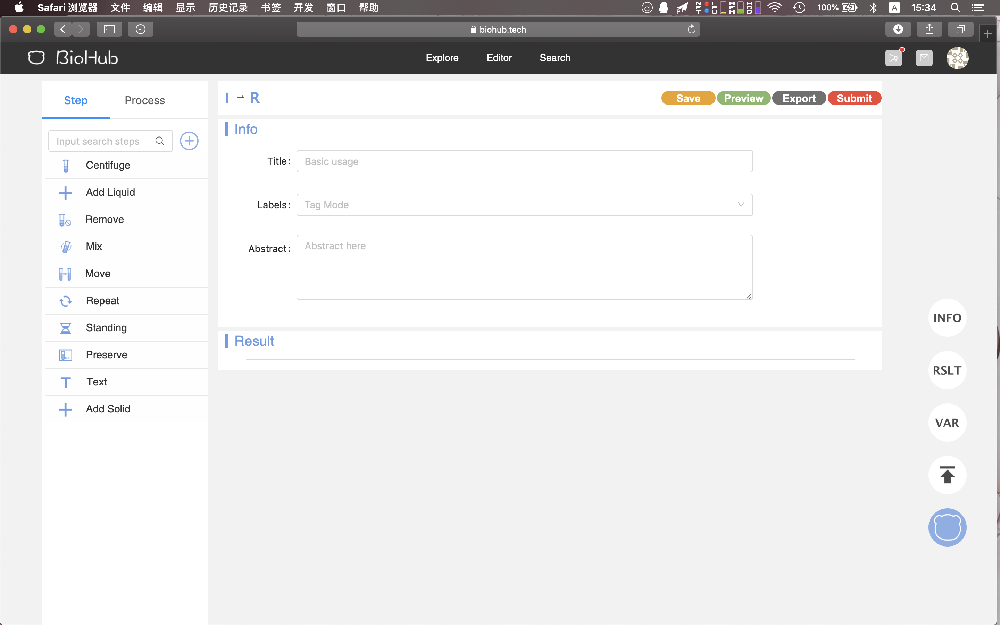
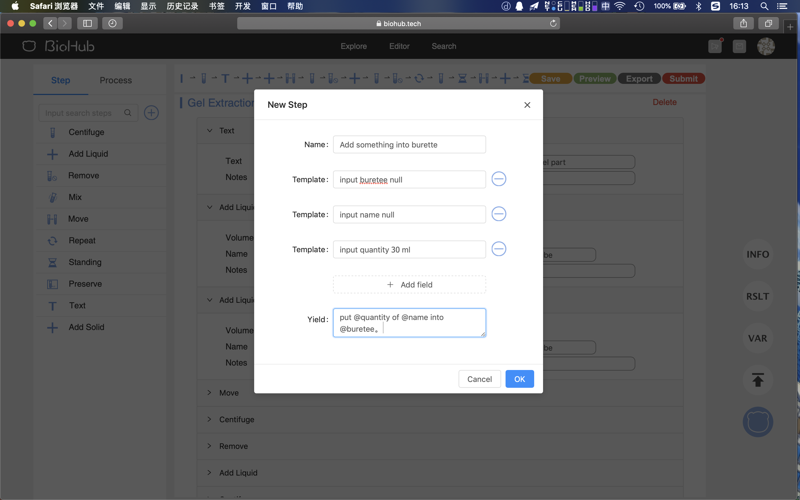
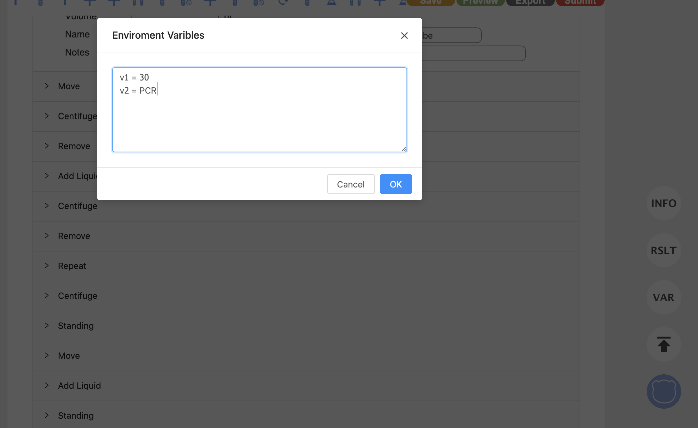
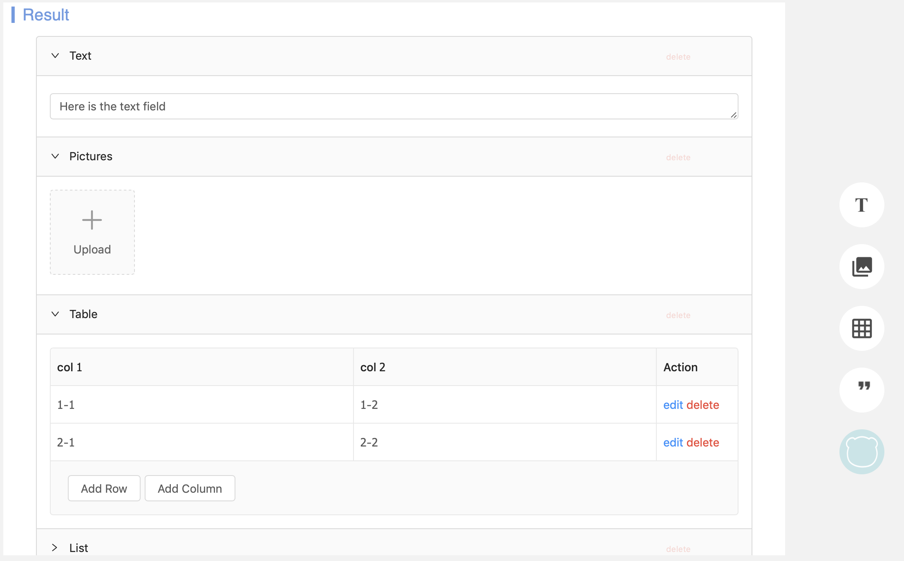
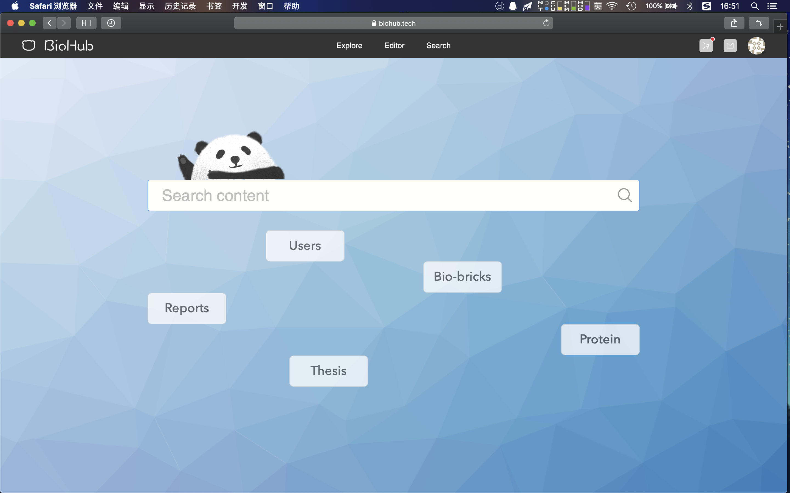

<html>
    <head>
<script src="/wiki/index.php?title=Team:USTC-Software/js/jquery&amp;action=raw&amp;ctype=text/javascript" type="text/javascript"></script>
        <link href="https://cdnjs.cloudflare.com/ajax/libs/fullPage.js/2.9.7/jquery.fullpage.css" rel="stylesheet">
       <link href="https://cdnjs.cloudflare.com/ajax/libs/semantic-ui/2.3.1/semantic.min.css" rel="stylesheet">

<link href="/wiki/index.php?title=Team:USTC-Software/css/style&amp;action=raw&amp;ctype=text/css" rel="stylesheet">
<script src="/wiki/index.php?title=Team:USTC-Software/js/fullpage&amp;action=raw&amp;ctype=text/javascript" type="text/javascript"></script>


    </head>
    <body>
<script src="/wiki/index.php?title=Team:USTC-Software/js/semantic&amp;action=raw&amp;ctype=text/javascript" type="text/javascript"></script>
<div class="ui menu pointing fixed" id="menu">
    <a class=" item" href="index.html"></a>
    <div class="ui item dropdown">Project
        <div class="menu">
            <a class="item" href="Project.html#Overview">Overview</a>
            <a class="item" href="Project.html#Motivation">Motivation</a>
            <a class="item" href="Improve">Improve</a>
            <a class="item" href="Implementation">Implementation</a>
        </div>
    </div>
    <a class="item" href="Attributions">Attribution</a>
    <div class="ui item dropdown">Demonstrate
        <div class="menu">
            <a class="item" href="Demonstrate#Overview">Overview</a>
            <a class="item" href="Demonstrate#Motivation">Motivation</a>
        </div>
    </div>
    <div class="ui item dropdown">Human Practice
        <div class="menu">
            <a class="item" href="Human_Practices#Science and Technology Week">Science and Technology Week</a>
            <a class="item" href="Human_Practices#Student Open Source Conference">Student Open Source Conference</a>
            <a class="item" href="Human_Practices#Asia-Pacific Conference in Taiwan">Asia-Pacific Conference in Taiwan</a>
            <a class="item" href="Human_Practices#Software Promotion">Software Promotion</a>
        </div>
    </div>
    <a class="ui item" href="Collaboration">Collaboration</a>
    <div class="ui item dropdown">Model
        <div class="menu">
            <a class="item" href="Project.html#Overview">Overview</a>
            <a class="item" href="Project.html#Motivation">Motivation</a>
        </div>
    </div>
    <div class="ui item dropdown">Medal
        <div class="menu">
            <a class="item" href="Medal#Overview">Overview</a>
            <a class="item" href="Medal#Motivation">Motivation</a>
        </div>
    </div>
    <a class="ui item" href="Team.html">Team</a>
    <div class="ui item dropdown" href="ValidatedContribution">ValidatedContribution
        <div class="menu">
            <a class="item" href="ValidatedContribution#Overview">Overview</a>
            <a class="item" href="ValidatedContribution#Feedback">Feedback</a>
            <a class="item" href="ValidatedContribution#Getting Started">Getting Started</a>
            <a class="item" href="ValidatedContribution#Apply An Account">Apply An Account</a>
            <a class="item" href="ValidatedContribution#Edit A New Report">Edit A New Report</a>
            <a class="item" href="ValidatedContribution#Intelligent Search Engine">Intelligent Search Engine</a>
            <a class="item" href="ValidatedContribution#Society">Society</a>
            <a class="item" href="ValidatedContribution#For More Information">For More Information</a>
        </div>
    </div>
</div>
</div>
        <div class="ui grid">
            <div class="one wide column"></div>
            <div class="three wide column">
                <div class="ui secondary vertical pointing menu" id="leftnav" style="height: 100%;padding-top: 100px;width: 90%;">
                    <div class="item">
                        <div class="header">Attributions</div>
                        <div class="menu">
                            <a class="item active leftnav-item">Developing</a>
                            <a class="item leftnav-item">Support</a>
<a class="item leftnav-item">iGEM Foundation</a>
<a class="item leftnav-item">Project</a>
<a class="item leftnav-item">Human Practice</a>
                        </div>
                    </div>
                </div>
            </div>
            <div class="twelve wide column">
                <div class="inside-container" style="height: 100%;padding-top: 100px;">
<h1>User Guide of BioHub 3.0</h1>
<h2>Overview</h2>
<p>The brand new <a href="https://biohub.tech">BioHub 3.0</a> has arrived to make your job easier than ever before. This year we bring you a new way to edit your reports and search whatever you need in one step. Here are some new features:</p>
<ul>
<li>An editor which can automatically compile your experimental reports.</li>
<li>An intelligent search engine based on machine learning.</li>
<li>A society that shares your ideas.</li>
</ul>
<p>Click <a href="https://biohub.tech">here</a> to take it a try. You'll learn how to get started and gain confidence that Biohub 3.0 can do whatever you need it to do.</p>
<div class="divider"></div>
<h2>FeedBack</h2>
<p>All we want to do is to make your work easier and we want to make it even further. If you have any suggestions, please create issues on our <a href="https://github.com/USTCSoftware2018/Frontend">Github repository</a>.</p>
<div class="divider"></div>
<h2>Getting Started</h2>
<p>Have a first look at our website. There are three tags which are <code>reports</code>, <code>iGEMers</code>.</p>
<p>.</p>
<p><code>Reports</code> shows some most popular reports which are recommended by our algorithm. Click these articles and you can see what your partners are doing. Feel free to leave a comment on these reports.</p>
<p><code>iGEMers</code> is a major part of our website. In this part, you can find those persons who share a common interest.</p>
<div class="divider"></div>
<h2>Apply an account</h2>
<p>Now, let's apply an account to enjoy Biohub 3.0. In the right of navigator located <code>Sign in</code> and <code>Register</code> buttons. Click the <code>Register</code> button to apply a new account. <strong>We promise to protect users privacy.</strong></p>
<p></p>
<p>Look! A lovely panda is shaking its hands to welcome you once you hang your mouse over it.</p>
<div class="divider"></div>
<h2>Edit a new report</h2>
<p>This online <code>editor</code> is a good way of recording your experiment. Once finishing reading this brief guide, you will know how fast and how easy we can achieve this goal.</p>
<p>We divide an experiment report into three parts: <code>info</code>, <code>protocol</code> and <code>Result</code></p>
<p>Here is the appearance of our <code>editor</code> and it initials an empty report when the <code>editor</code> button on the top is clicked:</p>
<p></p>
<p>In the Info block, you can input title, labels and abstract like this:</p>
<p></p>
<p>On the left side is a toolbox that contains <code>protocols</code> and <code>steps</code>. You can see there are some several steps and protocol that is created for you, you can create more steps and protocols as you wish.</p>
<p>Now let's click the <code>Add</code> step to see what will happen.</p>
<p></p>
<p>A new <code>Centrifuge</code> Step is inserted into the report. The only thing you need to do is to fill some blanks. That is how you record a '12000 rpm centrifuge for 30 s at 25 degrees.'. Is that amazing? But we can make it much faster.</p>
<p><code>protocol</code> is a set of steps or a template. Let's try <code>Gel Extraction</code>.</p>
<p></p>
<p>A serial of steps is inserted into your report and most of these blanks are accomplished by our templates.</p>
<p>It is true that the available <code>steps</code> and <code>protocols</code> are not able to meet all your demands. But you can create new steps and protocol. Here is an example:</p>
<p></p>
<p>A new <code>step</code> called <code>Add something into burette</code> is created in the step bar and you can insert it into your report.</p>
<p></p>
<p><code>Environment Variable</code> is another way to help you to accomplish your writing. Click the <code>VAR</code> button and define some variables.</p>
<p></p>
<p>In that way, the <code>editor</code> will replace all <code>@v1</code> pattern into <code>30</code> and <code>@v2</code> pattern into <code>PCR</code> in the report.</p>
<p>The third section of a report is results. In this section, it is free to insert some texts, pictures, lists, and tables to record the results.</p>
<p>Click these buttons on the right side of the editor to insert them into your report.</p>
<p></p>
<p>If you can not find those buttons, click the little blue cat button.</p>
<p>After finishing editing, click the <code>Save</code> button to save it and <code>preview</code> button to have a look of your work.</p>
<p></p>
<p>You can see all sentences are produced automatically. Click <code>Export</code> button to download your work in <code>PDF</code>.</p>
<div class="divider"></div>
<h2>Intelligent Search Engine</h2>
<p>Our Search Engine is much more Intelligent and useful than Biohub 2.0.</p>
<p>It not only supports searching Users or Articles, but also supports customize filter and sort rules in <strong>natural language</strong>. It means we support sentences like 'reports by Jiyan in this year' and 'reports with label PCR'. It is gorgeous and easy to use.</p>
<p>We support an integrated search that is connected to more than 50 websites like NLM, PubMed, PMC and so on.</p>
<p><code>Bio-bricks</code> is the traditional function in Biohub 2.0, and it will be supported in the long term. <code>BLAST</code> is useful to search gene segment like 'AGGT'.</p>
<p></p>
<div class="divider"></div>
<h2>Society</h2>
<p>You can see the details of all reports and leave a comment or like the report. In that way, the author will receive the feeds.</p>
<p>In that way, we build a scientific society where the academic discussion is possible</p>
<p></p>
<div class="divider"></div>
<h2>For more information</h2>
<p>If you want to learn more about Biohub 3.0, please contact us on <a href="https://github.com/USTCSoftware2018">github</a>.</p>            </div>
        </div>
<script src="/wiki/index.php?title=Team:USTC-Software/js/init&amp;action=raw&amp;ctype=text/javascript" type="text/javascript"></script>
<script src="/wiki/index.php?title=Team:USTC-Software/js/all&amp;action=raw&amp;ctype=text/javascript" type="text/javascript"></script>
    </body>
</html>
